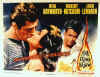

Films
on Disc Internet Magazine includes reviews and feature articles on laser discs, DVDs,
information on vintage movie posters and related links.
Films on Disc
Front Cover
May 1999
In this issue....
Features
Fastballs in Japan
Newly
arrived on DVD, the delightful comedy Mr. Baseball may take liberties with
the conventions of a foreigner playing baseball in Japan but you might find it is closer
to reality than the comedy suggests. The accompanying excerpts from an 1972
interview conducted in Kobe, Japan with an American ballplayer going through everything
Jack Elliot endures might shed some additional light on the humor in Mr. Baseball.
Want to compare
the home run swing of Jack Elliot to former Japanese Home Run
King Daryl
Spencer? Click on the baseball for Fastballs in Japan.
HOT LINKS |
etown.com
Venerable Internet Magazine etown.com is making a
big growth spurt adding veteran home theater writers to their editorial and review staff.
Look for many new hardware reviews in the coming weeks
|
Virtualurth
DVD reviews, news, and much more is
included in this beautifully designed entertainment site. Virtualurth was born on the
Internet in 1995 giving it invaluable experience in dealing with the vagaries of the Net.
|
|
|
Home Theater Reference Reviewing System

When you read a DVD review it's of utmost
important to know what equipment is being used to evaluate the quality. Click on the
projectors to find out more.
|
This
month's featured star is Robert
Mitchum. The poster is a link to many more Mitchum images. Check out the Movie Poster
Archive for Susan Hayward, Kirk Douglas, Katharine Hepburn and many more. The Features Archive has
articles ranging from Akira
Kurosawa to Blonde
Bimbos and John
Ford.

|
|

Robert Harris is part of the dynamic
duo that restored Lawrence of Arabia, Spartacus, My Fair Lady and Vertigo. Harris rides a
white horse into the battle to preserve our film legacy. Click on the image to read
more.
|

|
|